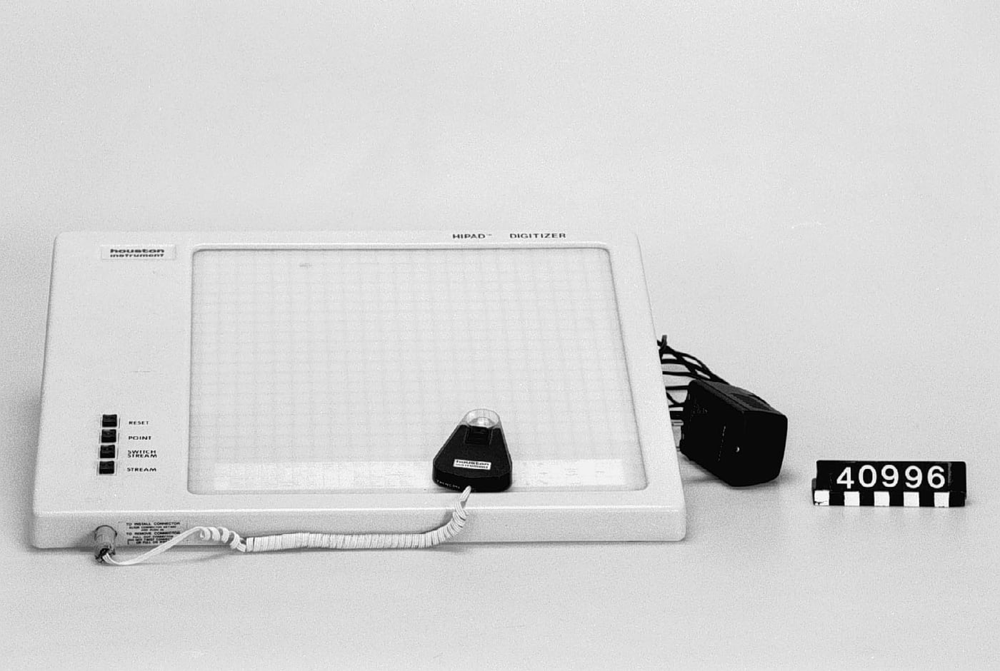
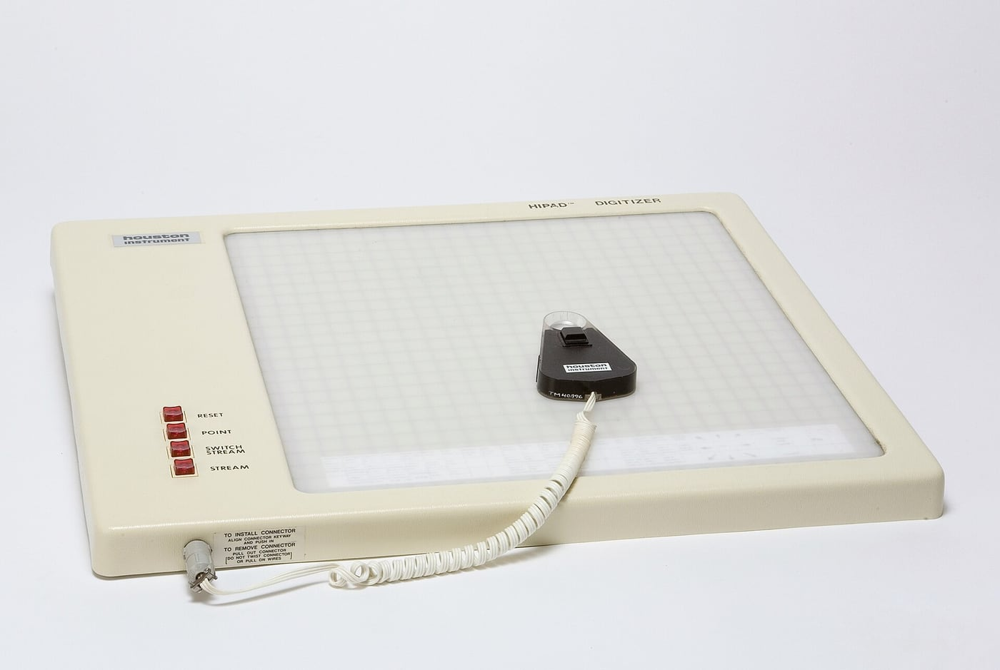

Houston Instruments HIPAD Digitizer
A professional absolute-positioning tablet built on Håkan Lans's phase-shift inductive sensing — a crosshair puck that streams coordinates from a document laid on the desk

Overview
The HIPAD is a professional digitizing tablet — a flat surface with an inductive grid and a hand-held puck — built by Houston Instrument of Austin, Texas, and sold from the mid-1970s through the 1980s. Its sensing was invented by Swedish engineer Håkan Lans, who began work on a digitizing table in 1972 because he needed a control device for digitizing seismic measurements: a map or chart was laid over a drafting table, measurement points were marked with crosshairs, and the position was read off. Houston Instrument asked for an improvement on the era's digitizers, which lost their orientation whenever the pointing device was lifted; Lans developed an absolute-positioning version. According to the Tekniska Museet object record, this was achieved with a system of loops in four separate layers, each energised at a different frequency, with position determined by the inductive sensing pointer and the phase shift of the signals in the loops. Precision was about 1/10 mm — finer than a person could place a crosshair. The device was marketed in the US as the HIPAD, was reportedly supported on DEC's MINC laboratory computer (DECUS reporting, October 1979), and moved from specialist survey and drafting use into the mainstream of professional computing as personal computers created demand for pointing devices. The museum's example is a grey plastic HIPAD with a gridded semi-transparent surface and a black puck carrying a crosshair, four buttons (RESET, POINT, SWITCH STREAM, STREAM), a spiral cable, and a 25-pin D-sub plus 3.5 mm jack on the rear edge.
Deep dive
The HIPAD did not begin as a desktop accessory. Håkan Lans's brief was a control device for digitizing seismic measurements: a paper record or map was clipped to a drafting table and the operator marked measurement points with crosshairs. In that context the tablet was an instrument for turning a physical document into numbers, and the crosshair puck — not a mouse — was the natural sensor. The interaction was deliberately direct: look through the crosshair, align it with a feature on the paper, press a button to commit the sample. It is a workflow inherited from cartography and exploration geophysics, where the document is the data source and the machine's job is to capture it faithfully.
The engineering problem was drift and lost orientation. Earlier digitizers required a known origin and lost their sense of place when the pointer was lifted. Lans's solution encoded position absolutely on the surface: loops in four separate layers carried different frequencies, the inductive pointer picked each up, and the phase shift across the loops gave the pointer's location. Because position is encoded in the surface rather than accumulated from motion, the puck can be lifted, a document slid underneath, and coordinates remain correct. The advertised precision, about 1/10 mm, was fine enough that the operator's ability to place a crosshair — not the electronics — was the limiting factor. This absolute-versus-relative contrast is the one that later became central to graphics tablets, pen displays, and touch input; here it is present in a 1970s instrument.
The museum's HIPAD puck has four labelled buttons: RESET, POINT, SWITCH STREAM and STREAM — a vocabulary belonging to a streamed coordinate protocol rather than to mouse clicks. The labels distinguish a single committed "point" from a "stream" of positions, with a switch to toggle streaming and a reset to re-originate. The exact host commands lie in period driver documentation rather than in the object itself, but the names alone show a device whose output is a flow of numbers the host must interpret. The crosshair made tracing and point-picking over a paper document a glance-and-press operation, and the mode buttons let the operator choose between sampling a single feature and dragging a continuous trace.
The HIPAD is also a story about the moment personal computing created demand for pointing devices. According to the Tekniska Museet record of Lans's account, after two years Houston Instrument wanted to stop production because they had made only about 70 units; Lans persuaded them to continue because he believed the personal computer would create a need for pointing devices. Shortly afterwards demand rose dramatically, and Lans estimated that 10,000 units were being manufactured a month. Whether or not that estimate is exact, it records the pivot from a niche digitizer for surveyors to a mass-market peripheral in the early 1980s — one of the clearest cases in the collection where a professional instrument's sensing technology crossed over into everyday computing.
DECUS reporting from October 1979 places HIPAD support on DEC's MINC laboratory computer, so the tablet was in scientific laboratory use, not only drafting. The same absolute-positioning property that made it useful for tracing maps and seismic charts made it useful wherever a paper document had to be digitised exactly: cartography, geological survey, PCB layout, and eventually CAD. A large absolute surface with a crosshair puck and mode buttons was a natural front end for the workstations of the late 1970s.
The museum's Summagraphics Bit Pad entry covers the magnetostrictive line; the HIPAD covers the inductive, absolute line, and adds an outsider's story: a device born in geophysical survey work, engineered by a Swedish inventor, commercialised by a Texas instrument maker, adopted in labs and drawing offices. It reminds us that "point and click" was for years only one pointing idiom, and that the absolute tablet — where surface and document are the same — was the professional's alternative. Its physical details are unusually legible: crosshairs, a four-button puck, a gridded translucent surface, and a D-sub connector are exactly the hardware a digital museum can preserve and explain.
Team & pioneers
- Håkan Lans (b. 1947). Swedish inventor who began the digitizing table in 1972 for seismic measurement work; developed the absolute-positioning inductive system and sold the technology to Houston Instrument. Later known for the STDMA datalink used in the Automatic Identification System (AIS).
- Houston Instrument (Austin, Texas). A division of Bausch & Lomb; manufactured and marketed the HIPAD and became a major supplier of plotters and digitizers.
- Digital Equipment Corporation (DEC). Supported the HIPAD on the MINC laboratory computer in the late 1970s, according to DECUS user-group reporting from October 1979.
Media


Sources
- Tekniska Museet via Wikimedia Commons — Houston Instruments Hipad Digitizer EPT-11 photographs and object description (Lans begins development in 1972 for seismic measurements; absolute positioning via a four-layer loop system and phase shift; 1/10 mm precision; Houston Instrument's 70-unit production and later 10,000/month estimate)
- Tekniska Museet via Wikimedia Commons — Digitaliseringsbord Houston Instrument Hipad (recorded as invented by Håkan Lans)
- Wikipedia — Håkan Lans (handheld-puck graphics tablet sold to Houston Instruments and marketed as the HIpad; KTH grand prize 1996 for the tablet puck; the article's "1971" trade naming predates the Tekniska Museet's 1972 development date)
- Larsson, Thomas and Stenlund, Ulf — "Vignettes of Sweden's Computer Graphics History", IEEE Annals of the History of Computing (2008), the reference cited for Lans's graphics tablet
- DECUS 1979 / MINC context — HIPAD support reported in DECUS proceedings from October 1979; treat the exact citation as unverified pending the DECUS volume itself